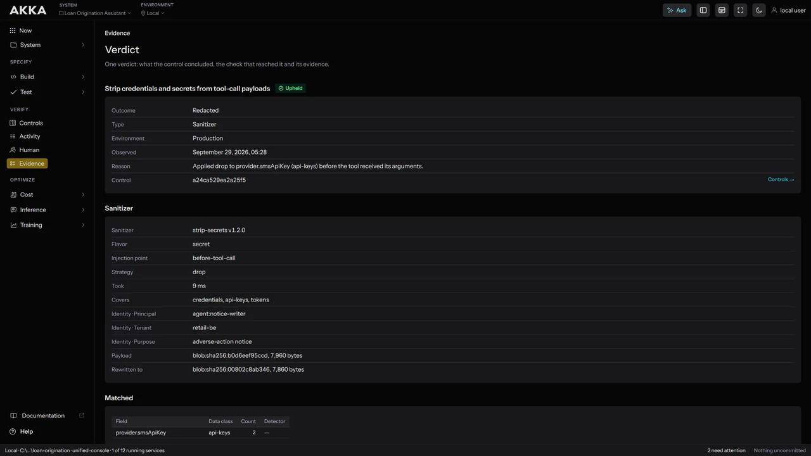
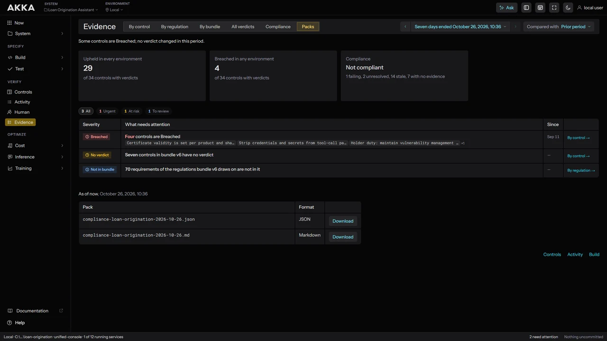

Define policies based upon your risk profile.
Identify policies and controls that are required from 240 regulations and frameworks by answering questions that define your AI risk profile.
AdoptDescribePlanDecideSign

A record an auditor or regulator will accept.
Every run leaves a durable evidence record you can hand to an auditor, mapped against a corpus of 240 regulations and frameworks.
By controlBy regulationAll verdictsCompliancePacks


